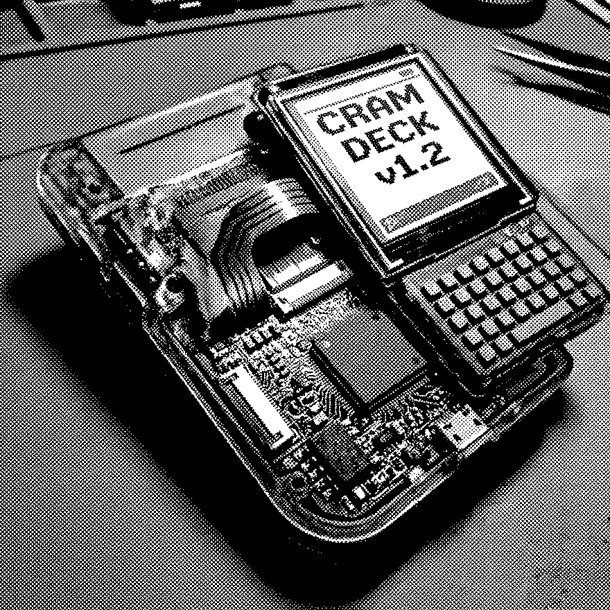

CUSTOMER.REC

NAME
DEX MARLOWE
DEVICE
Nocta cram deck
DOMINANT ROUTINE
REDIRECT
THREAT TIERS
TICKET RATE
90 / 115 cr
LAST CLEAN BOOT
----
POUCH DROPS
T2+
INTAKE
"It undoes my homework. I finish a page, it reroutes the file somewhere I cannot follow."
DEMO RIG
Hue
CUSTOMER.REC card study (ref-4). Data: shipped Dex Marlowe profile. Art: generated, 1-bit dither post-pass, ink-tinted live.